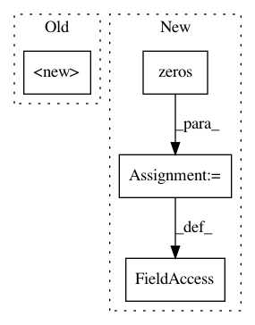

49c887e9208d2a0119eba2a26e38d033bb2ba4da,sac/policies/real_nvp.py,RealNVPPolicy,__init__,#RealNVPPolicy#Any#Any#Any#Any#,18
Before Change
self.distribution = RealNVP(real_nvp_config)
super().__init__(
env_spec,
obs_pl=self._observations_ph,
action=(
tf.tanh(self._distribution_z)
if squash
else self._distribution_z
),
scope_name="policy"
)
@overrides
def get_action(self, observations):
Sample action based on the observations.
After Change
ds = tf.contrib.distributions
self.bijector = RealNVPBijector(config=real_nvp_config,
event_ndims=self._Ds)
self.base_distribution = ds.MultivariateNormalDiag(
loc=tf.zeros(self._Ds), scale_diag=tf.ones(self._Ds))
self.distribution = ds.TransformedDistribution(
distribution=self.base_distribution,
bijector=self.bijector,
name="RealNVPPolicyDistribution")
y = self.distribution.bijector.forward(self._observations_ph)
self.log_pi = self.distribution.log_prob(y)
self.pi = tf.exp(self.log_pi)
self._action = tf.tanh(self.pi) if squash else self.pi
In pattern: SUPERPATTERN
Frequency: 3
Non-data size: 4
Instances
Project Name: rail-berkeley/softlearning
Commit Name: 49c887e9208d2a0119eba2a26e38d033bb2ba4da
Time: 2018-05-22
Author: kristian.hartikainen@gmail.com
File Name: sac/policies/real_nvp.py
Class Name: RealNVPPolicy
Method Name: __init__
Project Name: AIRLab-POLIMI/mushroom
Commit Name: ad44e9a2219e4508a68ba3e831d36b9ca6a324ee
Time: 2017-06-02
Author: carlo.deramo@gmail.com
File Name: PyPi/utils/spaces.py
Class Name: Box
Method Name: __init__
Project Name: HyperGAN/HyperGAN
Commit Name: cf1ec69f7c4290f9959b1d902d35ce6d72c48995
Time: 2020-08-22
Author: martyn@255bits.com
File Name: hypergan/train_hooks/adversarial_norm_train_hook.py
Class Name: AdversarialNormTrainHook
Method Name: __init__